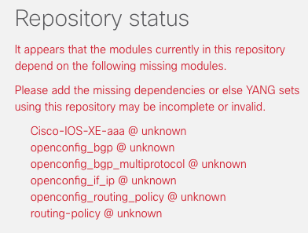
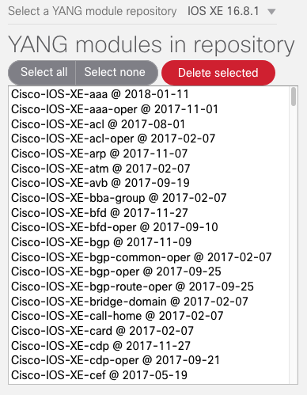

Constructing and populating a YANG module repository¶
From the sidebar on any YANG Suite page, select “Setup → YANG files and repositories”.
Select “New repository,” enter a name for this repository in the dialog that opens, and select “Create repository.”
Once the page refreshes to display your new repository, there are a number of different ways to populate it with YANG modules (also known as YANG models, YANG schemas, or YANG files):
Regardless of methodology, whenever the repository’s contents change, YANG suite will run sanity checks against the modules in the repository and report the results to you in the “Repository status” section to the right of the page.
If, for example, you have added modules that have dependencies on other modules, and said other modules are not also present in the repository, YANG suite will detect these missing dependencies and warn you that these dependencies need to be added as well.
The left side of the page lists the contents of the currently selected repository. You can choose to select and delete schemas from the repository by using the appropriate labeled buttons.
When you are happy with the contents of your repository, you can proceed to the Defining a YANG module set documentation.